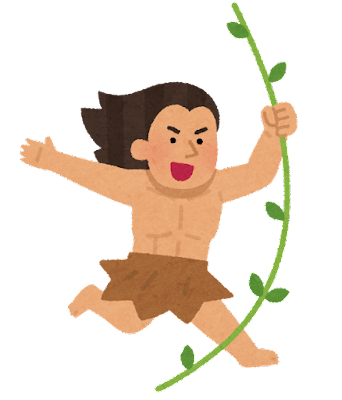
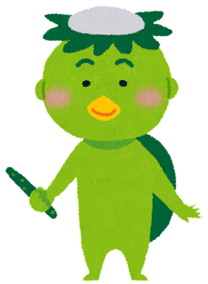

<!DOCTYPE html>
<html lang="en">

<head>
  <meta charset="UTF-8">
  <meta http-equiv="X-UA-Compatible" content="IE=edge">
  <meta name="viewport" content="width=device-width, initial-scale=1.0">
  <link rel="stylesheet" href="./css/all.css">
  <link href="https://fonts.googleapis.com/css2?family=Noto+Sans+TC:wght@100;300;400;500;700;900&display=swap"
    rel="stylesheet">
  <title>一起來學50音</title>
  <style>
    body {
      background-image: url("../翻牌_1024/images/bg_chiheisen_green.jpg");
      background-repeat: no-repeat;
      background-size: cover;
      font-family: 'Noto Sans TC', sans-serif;
    }

    .card {
      width: 50px;
      height: 50px;
      position: relative;
      /* 讓牌都擺在一起 */
      float: left;
      margin: 10px;
      /* 在翻牌的感覺 */
      transition: transform 1s;
      /* 關鍵，設定子元素在 3D 空間裡面 */
      transform-style: preserve-3d;
    }

    .card-front {
      width: 100%;
      height: 100%;
      background-image: url(./images/hiragana_01.png);
      /* 縮放顯示整張 */
      background-size: contain;
      background-repeat: no-repeat;
      background-position: center;
      position: absolute;
      /* transform: rotateY(180deg); */
      /* 設定隱藏正面 */
      backface-visibility: hidden;
    }

    .card-back {
      width: 100%;
      height: 100%;
      background-image: url(./images/toy_game.jpg);
      background-size: contain;
      background-repeat: no-repeat;
      background-position: center;
      position: absolute;
      transform: rotateY(180deg);
      /* 設定隱藏背面 */
      backface-visibility: hidden;
    }


    /* 如果有下這個，卡片是要蓋起來的 */
    .card-close {
      transform: rotateY(180deg);
    }

    /* #container {
      margin: auto;
      text-align: center;
      border: 2px solid #333;
    } */

    #description {
      position: absolute;
      top: 50%;
      left: 50%;
      transform: translate(-50%, -50%);
      margin: auto;
      /* border: 10px solid #593119; */
      /* border-radius: 30px; */
      /* background: #ebceaa; */
      padding: 20px 50px;
      color: #593119;
    }


    #description #kappa {
      position: fixed;
      /* display: inline; */
      width: 100px;
      height: 150px;
      bottom: -20%;
      left: 60%;
      /* transform: translate(-70%, -50%); */
    }

    #tarzan {
      /* position: absolute; */
      top: 0;
      left: 0;
    }

    #description #title {
      font-weight: 500;
      font-size: 32px;
      top: 50%;
      z-index: 1;
    }

    #comtainer {
      position: relative;
      margin: auto;
    }

    /* 遊戲區域 */
    #game {
      width: 420px;
      height: 350px;
      margin: auto;
      padding: 5px;
      overflow: hidden;
      position: fixed;
      left: 50%;
      top: 50%;
      transform: translate(-50%, -50%);
      text-align: center;
      border: 5px solid rgb(255, 255, 255);
      border-radius: 15px;
      background: rgba(228, 228, 228, 0.604);
      backdrop-filter: blur(5px);
      cursor: url("./images/syuriken.png"), auto;
    }

    #btn-start {
      color: white;
      background: #D96262;
      border: none;
      border-radius: 10px;
      padding: 10px 20px;
      font-size: 2rem;
      font-weight: 900;
    }

    #timetext {
      width: 130px;
      height: 20px;
      line-height: 20px;
      position: fixed;
      top: 15%;
      left: 46%;
      transform: translate(-50%, -50%);
      text-align: center;
      color: white;
      margin: 10px;
      /* display: none; */
      background: #D96262;
      border: none;
      border-radius: 10px;
      padding: 10px 20px;
      font-size: 18px;
      font-weight: 500;
      font-family: 'Noto Sans TC', sans-serif;
      /* position: relative; */
    }

    #btn-restart {
      width: 60px;
      height: 40px;
      line-height: 20px;
      position: fixed;
      top: 15%;
      left: 55%;
      transform: translate(-50%, -50%);
      /* position: absolute; */
      text-align: center;
      color: white;
      margin: 10px;
      border: none;
      border-radius: 10px;
      padding: 10px 20px;
      font-size: 18px;
      font-weight: 500;
      background: #dfda37;
    }

    #btn-index {
      width: 125px;
      height: 45px;
      line-height: 25px;
      position: fixed;
      top: 30%;
      left: 49%;
      transform: translate(-50%, -50%);
      text-align: center;
      color: white;
      margin: 10px;
      /* display: none; */
      background: #D96262;
      border: none;
      border-radius: 10px;
      padding: 10px 20px;
      font-size: 18px;
      font-weight: 500;
      font-family: 'Noto Sans TC', sans-serif;
    }
  </style>
</head>

<body>


</body>
<!-- 看卡片一開始有沒有成功 -->
<!-- <div class="card">
  <div class="card-front"></div>
  <div class="card-back"></div>
</div> -->

<!-- 內容 -->
<!-- 起始畫面/ 開始按鈕、遊戲名稱/文案>一起成為50音小天才 -->
<!-- 按下按鈕時畫面/  左上右上圖示fadeout  -->
<!-- 遊戲畫面/ 遊戲畫面出現，計時(無倒數) -->
<!-- 結束畫面/ 跳出視窗，花費秒數 -->
<!-- 按下開始按鈕後 -->
<div id="tarzan"> </div>
<div id="description">
  <div id="title"><i class="fa-solid fa-crown"></i>&ensp;誰是 50 音小天才&ensp;<i class="fa-solid fa-crown"></i></div>
  
  <!-- 開始按鈕 -->
  <p>
    <button type="button" id="btn-start" onclick="start()">PLAY <i class="fa-solid fa-play"></i></button>
    <br>
  </p>
</div>

<!-- 遊戲開始 -->
<!-- 遊戲區域 -->
<div id="comtainer">
  <div id="game"></div>
  <!-- 再玩一次/回首頁按鈕 -->
  <div>
    <span>&nbsp;</span>
    <a href="./index.html"><button type="button" id="btn-index">回首頁 <i class="fa-solid fa-house"></i></button></a>
    <!-- 時間 -->
    <input type="text" id="timetext" value="00時00分00秒" readonly><br>

    <button type="reset" id="btn-restart" onclick="reset(); start();">
      <i class="fa-solid fa-rotate-right"></i>
    </button>
    <!-- <input type="reset" value="<i class="fa-solid fa-rotate-right"></i>"> -->
    <!-- <p class="time-left">時間：<span id="text-time">0</span> 秒 </p> -->
  </div>
</div>

<!-- <script src="./jquery-3.6.1.min.js"></script> -->
<!-- CDN-JQ -->
<script src='https://cdnjs.cloudflare.com/ajax/libs/jquery/3.6.1/jquery.min.js'
  integrity='sha512-aVKKRRi/Q/YV+4mjoKBsE4x3H+BkegoM/em46NNlCqNTmUYADjBbeNefNxYV7giUp0VxICtqdrbqU7iVaeZNXA=='
  crossorigin='anonymous'></script>
<!-- sweetalert2 -->
<script src="https://cdn.jsdelivr.net/npm/sweetalert2@11"></script>

<script>
  // 預設遊戲停止/結束
  let cardgame = false

  // 先隱藏
  $('#game, #btn-restart, .scoreboard, .time-left, #btn-index, #timetext').hide()
  // 按下開始按鈕後
  $('#btn-start').click(function () {
    $('#description,#btn-index,#tarzan').hide()
    var imgUrl = "./images/bg_natural_nanohana_batake.jpg"
    // console.log('body')
    $('body').css("background-image", "url(" + imgUrl + ")")
    $('body').css("background-size", "cover")
    $('#game, #btn-restart,.scoreboard, .time-left, #timetext').show()
    cardGeneration()
    // $('#text-time').css('display', 'inline-block')
    if ($('cardgame') === false) {
      $(' #btn-restart, .scoreboard').hide()
      $('btn-index').show()
    }
  })

  // 重置時間
  // $('#game, #btn-restart, .scoreboard, .time-left,#time-time,#btn-index, #timetext').hide()
  $('#btn-restart').click(function () {
    $('btn-index').hide()
    $('.card').remove()
    cardGeneration()
    $('#game').show()
  })

  // //存最高分
  // const storage = JSON.parse(localStorage.getItem('capoogame'))
  // // const storage = JSON.parse(localStorage.capoogame)
  // const highscore = localStorage.capoogame ? JSON.parse(localStorage.capoogame) : { name: '', score: 0 }
  // $('#text-highscorename').text(highscore.name)
  // $('#text-highscore').text(highscore.score)

  var hour, minute, second;//時 分 秒
  hour = minute = second = 0;//初始化
  var millisecond = 0;//毫秒
  var int;
  //重置函式
  function reset() {
    window.clearInterval(int);
    millisecond = hour = minute = second = 0;
    const spendtime = hour + '時' + minute + '分' + second + '秒';
    document.getElementById('timetext').value = spendtime;
  }
  //開始函式
  function start() {
    int = setInterval(timer, 50);//每隔50毫秒執行一次timer函式
  }
  //計時函式
  function timer() {
    millisecond = millisecond + 50;
    if (millisecond >= 1000) {
      millisecond = 0;
      second = second + 1;
    }
    if (second >= 60) {
      second = 0;
      minute = minute + 1;
    }

    if (minute >= 60) {
      minute = 0;
      hour = hour + 1;
    }
    const spendtime = hour + '時' + minute + '分' + second + '秒';
    document.getElementById('timetext').value = spendtime; //+ millisecond + '毫秒'
    return spendtime;

  }
  //暫停函式
  function stop() {
    window.clearInterval(int);
  }

  // 產生卡片 30 張
  function cardGeneration() {
    for (let i = 0; i < 30; i++) {
      $('#game').append(`
        <div class="card card-close">
          <div class="card-front"></div>
          <div class="card-back"></div>
        </div>
    ` )
    }
    // 決定每個圖片的數字
    // 平假名 hiragana / 片假名 katakana
    for (let i = 0; i < ($('.card').length); i++) {
      // 決定的是第幾個平假名數字， i是 index ，但沒有第0個 所以後面要再+1回來
      const num = i % ($('.card').length / 2) + 1
      const aaa = Math.floor(i / ($('.card').length / 2))
      console.log(`${aaa ? 'hiragana' : 'katagana'}_${num}.png`);
      $('.card').eq(i).find('.card-front').css('background-image', `url(./images/${aaa ? 'hiragana' : 'katakana'}_${num}.png)`)
      // 暫存資料，要寫"data-"
      $('.card').eq(i).attr('data-num1', num)

      // 打散
      // 全部是16張，但宣告的target 之後要放進eq()當i，所以target是為0~15。m.randon是0~1的隨機數，但我們需要
      const target = Math.round(Math.random() * ($('.card').length - 1))
      // 選到那個東西，放到目前這張後面
      $('.card').eq(target).insertAfter($('.card').eq(i))
    }
  }

  // 當點擊到遊戲區上的card時
  // 配對
  $('#game').on('click', '.card', function () {
    // 紀錄遊戲開始
    cardgame = true

    // 先檢查目前有幾張翻開，最多一次翻兩張，且這張牌還沒翻開，還沒被標記完成才可以翻
    // $(卡片:沒有蓋起來) 的長度 <2張(0或張) 且這張牌還沒翻開，還沒被標記完成
    if ($('.card:not(.card-close)').length < 2 &&
      $(this).hasClass('card-close') &&
      !$(this).hasClass('card-ok')
    ) {
      $(this).removeClass('card-close')
    }
    // 如果翻開兩張了，再執行判斷
    if ($('.card:not(.card-close)').length === 2) {
      // 如果數字一樣
      if ($('.card:not(.card-close)').eq(0).attr('data-num1') === $('.card:not(.card-close)').eq(1).attr('data-num1')) {
        // 用 card-ok 標記已完成
        $('.card:not(.card-close)').addClass('card-ok')
        // 在1秒後，不透明度變成0(看不到)
        $('.card:not(.card-close)').fadeTo(500, 0)
      }
      // 不管數字一不一樣都翻回來(一樣的話也沒差，因為上面有設定會被淡出了)
      setTimeout(() => {
        // 被翻玩了
        $('.card:not(.card-close)').addClass('card-close')
        // 可以看一下翻到甚麼
        if ($('.card-ok').length === $('.card').length) {
          stop()
          // 遊戲結束
          cardgame = false
          $('#game img').remove()
          $('#game').fadeOut()
          Swal.fire({
            icon: 'success',
            title: '~恭喜~',
            text: '你花了' + timer() + '~你就是50音小天才~'

          })
          //點alert的OK鍵，才會顯示再玩一次按鈕
          $('.swal2-actions').click(function () {
            $('#btn-restart').hide()
            $('#btn-index').show()
          })
        }
      }, 1000)
    }
  })


</script>

</html>